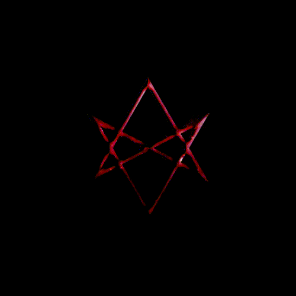

We are nothing but visitors on this Earth. Rushing through time and space, bound to a bright sphere by an invisible force in a mysterious universe.
Most of us take this for granted, while refusing to believe these forces have any more effect on us than a butterfly beating its wings halfway around the world. Or that the posthuman born here today might not find itself the fortunate focus of similar unseen forces, converging like the planets into specks of cosmic energy. Or maybe the answer lies even further from our grasp.
Before the exploration of space, of the moon and planets, mankind held that the heavens were the home of powerful gods who controlled not just the vast firmament but the earthly fate of humanity itself. And that the pantheon of deities were the cause and reason for the human condition, for the past and the future, and for which great monuments would be erected, on Earth as in Heaven.
But in time mankind replaced these gods with new gods and new religions that provided no more certain or greater answers than those worshiped by their ancestors. However, we have chosen now our monolithic and benevolent law and found our certainties in universal belief.
But in time mankind replaced these gods with new gods and new religions that provided no more certain or greater answers than those worshiped by their ancestors. However, we have chosen now our monolithic and benevolent law and found our certainties in universal belief.
It begins where it ends, in The Center.
A Vision born from deepest dreams coming to me unguarded. Whispering images unlocked from time and distance. A soul unbound, touched by others but never held, on a course guided by some unseen hand. The journey ahead promising no more than my future reflected upon me, until at last I reach the end, facing a truth I could no longer deny.
Believers all, we wait for a sign, a revelation, our eyes turned skyward ready to accept the truly sublime.